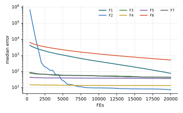

Chương 10 · Mục 10.2Chapter 10 · Section 10.2
Thuật toán dơiBat AlgorithmBat Algorithm — BABA — hunting by echolocation
Châu Văn Vân · PTITHCM
Mục tiêu bài họcLearning objectives
Sau chương này, bạn có thểAfter this chapter you will be able to
- Giải thích cách dơi nhỏ định vị bằng tiếng vọng: tần số, độ to và tốc độ phát xung.Explain microbat echolocation: frequency, loudness and pulse rate.
- Viết ba phương trình cập nhật tần số, vận tốc và vị trí.Write the three updates for frequency, velocity and position.
- Giải thích vì sao độ to A giảm và tốc độ xung r tăng khi dơi tới gần mồi.Explain why loudness A falls and pulse rate r rises as a bat closes in.
- Liên hệ BA với PSO và nhận diện lỗi trong ví dụ tính tay của sách tham khảo.Relate BA to PSO and spot the errors in the reference book's hand calculation.
Tổng quanOverview
Dơi “nhìn” bằng âm thanhBats “see” with sound
- Do Xin-She Yang đề xuất năm 2010, dựa trên khả năng định vị bằng tiếng vọng (echolocation) của dơi nhỏ.Proposed by Xin-She Yang in 2010, based on microbat echolocation.
- Dơi phát ra xung siêu âm và nghe tiếng vọng để biết khoảng cách, hướng và loại vật cản hay con mồi.Bats emit ultrasonic pulses and listen to echoes to judge distance, direction and the kind of obstacle or prey.
- Khi đi tìm, dơi phát xung to và thưa; khi đã tới gần mồi, xung nhỏ dần nhưng dày lên để định vị chính xác.While searching, pulses are loud and sparse; near the prey they become quieter but more frequent for precise targeting.
- Dơi là thú có vú; cùng với cá voi ở mục 10.1, chúng dùng sóng để săn mồi.Bats are mammals; like the whales of section 10.1, they hunt using waves.
Ý tưởng cốt lõiCore idea
Mỗi con dơi bay với vận tốc được “chỉnh tần số” về phía con dơi giỏi nhất. Khi có vẻ đã thấy mồi, nó hạ giọng và phát xung dày hơn: ít khám phá ngẫu nhiên, nhiều tìm kiếm quanh lời giải tốt.Each bat flies with a “frequency-tuned” velocity toward the best bat. Once it seems to have found prey, it lowers its voice and pulses faster: less random exploration, more local search around good solutions.
Mô hình toán họcMathematical model
Ba phương trình chuyển độngThree motion equations
- x*: vị trí tốt nhất hiện tại, chọn theo giá trị hàm mục tiêu, không theo tần số hay độ to.x*: the current best position, chosen by objective value, not by frequency or loudness.
- Giống PSO không có pbest: vận tốc tích lũy và bị kéo về con tốt nhất với hệ số ngẫu nhiên fi.Like PSO without pbest: velocity accumulates and is pulled to the best bat with a random factor fi.
- Ví dụ: [fmin, fmax] = [0, 2] trong mã minh họa của Yang.For example [fmin, fmax] = [0, 2] in Yang's demo code.
Mô hình toán họcMathematical model
Đi bộ cục bộ và điều chỉnh tiếng kêuLocal walk and call adjustment
- xold: một lời giải trong nhóm tốt nhất; Āt: độ to trung bình của cả bầy.xold: a solution among the current best; Āt: average loudness of the swarm.
- 0 < α < 1, γ > 0; thường α = γ = 0.9. Khi t → ∞: Ai → 0 và ri → r0i.0 < α < 1, γ > 0; typically α = γ = 0.9. As t → ∞: Ai → 0 and ri → r0i.
- Lưu ý dấu âm trong e−γt: nếu viết e+γt như trong sách tham khảo thì r sẽ âm.Note the minus sign in e−γt: with e+γt, as printed in the reference book, r would become negative.
Các bướcSteps
Các bước của BABA step by step
Yang (2010); f ∈ [0, 2], A0 = 1, r0 = 0.5, α = γ = 0.9.Yang (2010); f ∈ [0, 2], A0 = 1, r0 = 0.5, α = γ = 0.9.
- Khởi tạo n dơi với vận tốc 0, độ to A0, tần suất xung r0.Initialize n bats with zero velocity, loudness A0, pulse rate r0.
- Rút tần số f; cập nhật vận tốc và vị trí.Draw frequency f; update velocity and position.
- Nếu rand > ri: đi cục bộ quanh con tốt nhất x* + ε Ā.If rand > ri: local walk around the best x* + ε Ā.
- Nhận lời giải mới nếu tốt hơn và rand < Ai; khi nhận, giảm Ai, tăng ri.Accept if better and rand < Ai; on acceptance, decrease Ai, increase ri.
- Cập nhật con tốt nhất; lặp đến hết ngân sách.Update the best; repeat until the budget is spent.
2 – 5 vòng lặp chínhmain loop
Thuật toánAlgorithm
Lưu đồFlowchart
Tham sốParameters
Tham số của BABA parameters
| Tham sốParameter | Ý nghĩaMeaning | Giá trị thường dùngTypical value |
|---|---|---|
| fmin, fmax | Dải tần sốFrequency range | 0, 2 |
| A0, α | Độ to ban đầu và hệ số giảmInitial loudness and decay | 1, 0.9 |
| r0, γ | Tần suất xung và tốc độ tăngPulse rate and growth | 0.5, 0.9 |
| vmax | Kẹp vận tốc (lựa chọn cài đặt)Velocity clamp (implementation choice) | 0.2 (ub − lb) |
Thuật toán BAThe BA algorithm
Mã giảPseudocode
Tham số: n, fmin, fmax, A0, r0, α, γ.Parameters: n, fmin, fmax, A0, r0, α, γ.
- Khởi tạo vị trí xi, vận tốc vi, độ to Ai, xung ri; x* ← con tốt nhấtInitialize positions xi, velocities vi, loudness Ai, pulse rates ri; x* ← best
- while t < T
- for mỗi con dơieach bat: cập nhật fi, vi, tạo xnewupdate fi, vi, build xnew
- if rand > ri: thay xnew bằng bước đi cục bộ quanh lời giải tốtreplace xnew by a local walk around a good solution
- if rand < Ai vàand xnew tốt hơnis better: nhận; giảm Ai, tăng riaccept; lower Ai, raise ri
- Xếp hạng theo hàm mục tiêu, cập nhật x*Rank by objective, update x*
- return x*
Mô phỏngSimulation
12 con dơi trên cùng địa hình12 bats on the same landscape
Vòng tròn quanh mỗi con dơi tỉ lệ với độ to Ai: càng về sau vòng càng nhỏ, cho thấy dơi đã “hạ giọng” để tìm kỹ quanh mồi.The ring around each bat scales with its loudness Ai: rings shrink as bats “lower their voice” to search closely around prey.
Tham số: f ∈ [0, 2], A0 = 1, r0 = 0.5, α = γ = 0.9. Vì r bắt đầu từ 0, lúc đầu hầu như con dơi nào cũng đi bộ cục bộ quanh x*; với cấu hình này bầy dừng ở hố cục bộ phía trên bên trái.Settings: f ∈ [0, 2], A0 = 1, r0 = 0.5, α = γ = 0.9. Because r starts at 0, early on almost every bat takes a local walk around x*; with this setup the colony settles in the local basin at the upper left.
Ví dụ trong sách tham khảoExample from the reference book
Okwu & Tartibu (2021), chương 8: ví dụ ba con dơiOkwu & Tartibu (2021), chapter 8: the three-bat example
| Nội dungItem | Sách ghiThe book says | Kiểm chứngVerified |
|---|---|---|
| Cập nhật tần sốFrequency update | f1 = 2 + 1(8 − 2) = 8 với [fmin, fmax] = [0, 10]f1 = 2 + 1(8 − 2) = 8 with [fmin, fmax] = [0, 10] | f = 0 + β · 10; không dùng giá trị f cũf = 0 + β · 10; the old f is not used |
| Vị trí con dơi 1Bat 1 position | x1 = 39, rồi bước sau dùng 35x1 = 39, then 35 in the next step | không nhất quán giữa hai bảnginconsistent between the two tables |
| Chọn con tốt nhấtChoosing the best bat | theo tần số và độ to lớn nhấtby highest frequency and loudness | theo giá trị hàm mục tiêu nhỏ nhấtby the lowest objective value |
| Công thức 8.5 và εEquation 8.5 and ε | r = r0(1 − eγt); ε = 1.1r = r0(1 − eγt); ε = 1.1 | r = r0(1 − e−γt); ε phải thuộc [−1, 1]r = r0(1 − e−γt); ε must lie in [−1, 1] |
| Hàm WayburnWayburn function | nghiệm in ra có 10 thành phần, f = 0.236a 10-component solution, f = 0.236 | hàm chỉ có 2 biến; cực tiểu f = 0 tại (1, 2)the function has 2 variables; minimum f = 0 at (1, 2) |
Vì các lỗi trên, chương này trình bày BA theo bài gốc của Yang (2010) thay vì ví dụ trong sách. Ứng dụng tắc nghẽn giao thông (Delta State) trong sách chỉ dừng ở bước dựng mô hình hai mức, chưa có kết quả tối ưu.Because of these errors, this chapter follows Yang's original paper (2010) rather than the book's example. The book's traffic-congestion application (Delta State) stops at building the bi-level model, without optimization results.
Ví dụ tính tayWorked example
Một bước của dơiOne bat step
- β = 0.5: f = 1. v = 0, x = 3, x* = 1: v = 2, x = 5.β = 0.5: f = 1. v = 0, x = 3, x* = 1: v = 2, x = 5.
- Theo đúng công thức gốc, số hạng (x − x*) đẩy dơi ra xa con tốt nhất; khai thác nhờ bước cục bộ.Following the original formula, the term (x − x*) pushes the bat away from the best; exploitation comes from the local walk.
Độ to và xungLoudness and pulse
- Sau một lần nhận: A = 0.9 · 1 = 0.9.After one acceptance: A = 0.9 · 1 = 0.9.
- r = 0.5(1 − e−0.9) = 0.297 tại t = 1, tiến dần về 0.5.r = 0.5(1 − e−0.9) = 0.297 at t = 1, approaching 0.5.
Các biến thểVariants
Các biến thể của BABA variants
BA nhị phânBinary BA
Hàm chuyển cho chọn đặc trưng.Transfer functions for feature selection.
BA đa mục tiêuMulti-objective BA
Yang (2011).Yang (2011).
BA + Lévy / hỗn loạnBA + Lévy / chaos
Tăng khám phá.More exploration.
BA laiHybrid BA
Kết hợp với DE, PSO.Combined with DE, PSO.
Ứng dụngApplications
Ứng dụng của BABA applications
Các bài toán thường gặp với BA.Problems commonly tackled with BA.
Thiết kếDesign
Bài toán kỹ thuật có ràng buộc.Constrained engineering problems.
Lập lịchScheduling
Flow-shop, phân bổ tài nguyên.Flow-shop, resource allocation.
ẢnhImaging
Phân ngưỡng, nén ảnh.Thresholding, compression.
Học máyMachine learning
Chọn đặc trưng, huấn luyện mạng.Feature selection, network training.
Thực nghiệm · BAExperiment · BA
Kết quả trên bộ 7 hàm, D = 10, 30 lần chạyResults on the 7-function suite, D = 10, 30 runs
| HàmFunction | Trung bìnhMean | Độ lệchStd | Trung vịMedian | so PSOvs PSO |
|---|---|---|---|---|
| F1 · Sphere | 1.55e+2 | 2.07e+2 | 7.77e+1 | − |
| F2 · Rosenbrock | 2.94e+1 | 5.19e+1 | 7.52e+0 | − |
| F3 · Rastrigin | 4.67e+1 | 1.31e+1 | 4.43e+1 | − |
| F4 · Ackley | 1.31e+1 | 1.53e+0 | 1.35e+1 | − |
| F5 · Griewank | 3.71e+1 | 1.18e+1 | 3.71e+1 | − |
| F6 · Shifted Sphere | 6.04e+2 | 5.51e+2 | 5.23e+2 | − |
| F7 · Shifted Rastrigin | 4.58e+1 | 1.40e+1 | 4.36e+1 | − |
- Sai số f(xbest) − f* sau 20 000 lần đánh giá; n = 30; tham số mặc định của bài gốc; giá trị < 10−8 ghi là 0.Error f(xbest) − f* after 20,000 evaluations; n = 30; default parameters of the original paper; values < 10−8 shown as 0.
- Cột cuối: Wilcoxon rank-sum với PSO (α = 0.05): + tốt hơn, − kém hơn, ≈ không khác biệt.Last column: Wilcoxon rank-sum vs PSO (α = 0.05): + better, − worse, ≈ no difference.
- Xếp hạng Friedman trung bình: 15.86, đứng thứ 17/18 trong 18 thuật toán của giáo trình.Average Friedman rank: 15.86, position 17/18 among the textbook’s 18 algorithms.
- BA đứng gần cuối: phần lớn tiến bộ đến từ bước cục bộ, còn bước theo tần số đẩy dơi ra xa con tốt nhất.BA ranks near the bottom: most progress comes from the local walk, while the frequency step pushes bats away from the best.
Thực nghiệm · BAExperiment · BA
Đường hội tụ (trung vị 30 lần chạy)Convergence (median of 30 runs)

Mã nguồnSource code
Mã nguồn PythonPython source code
Đoạn trích phần cập nhật chính; tệp đầy đủ có chú thích và tham số mặc định theo bài gốc.Excerpt of the main update; the full file documents the default parameters of the original paper. code/si/algorithms/ba.py
while not prob.done: t += 1 best = prob.best_x.copy() Abar = A.mean() for i in range(n): if prob.done: break fr = fmin + (fmax - fmin) * rng.random() V[i] = np.clip(V[i] + (X[i] - best) * fr, -vmax, vmax) xn = X[i] + V[i] if rng.random() > r[i]: xn = best + rng.uniform(-1, 1, prob.dim) * Abar xn = prob.clip(xn) fn = prob(xn)[0] if rng.random() < A[i] and fn < fx[i]: X[i], fx[i] = xn, fn
Chạy lại toàn bộ thực nghiệm: python -m experiments.run_continuous trong thư mục code/ (xem PROTOCOL.md).Reproduce all experiments: python -m experiments.run_continuous inside code/ (see PROTOCOL.md).
Đánh giáAssessment
Tự điều chỉnh tham số theo tiến trình sănSelf-tuning parameters as the hunt progresses
Điểm mạnhStrengths
- Độ to và tốc độ xung tự điều chỉnh, giúp chuyển dần từ khám phá sang khai thác.Loudness and pulse rate self-adjust, shifting smoothly from exploration to exploitation.
- Điều chỉnh tần số cho bước nhảy đa dạng giữa các con dơi.Frequency tuning gives each bat a different step size.
- Khi Ai = 0, ri = 0 và tần số cố định, BA trở về một dạng PSO; khi bỏ vận tốc, gần với tìm kiếm ngẫu nhiên có chấp nhận.With Ai = 0, ri = 0 and fixed frequency, BA reduces to a form of PSO; without velocity it is close to a random search with acceptance.
Hạn chế và biến thểLimitations and variants
- Vận tốc tích lũy không có quán tính nên dễ “bay quá” và dao động; thường phải kẹp vận tốc.Accumulated velocity without inertia tends to overshoot and oscillate; velocity clamping is often needed.
- Khi A về 0 quá sớm, bầy ngừng nhận lời giải mới và hội tụ sớm.If A drops to 0 too early, the swarm stops accepting new solutions and converges prematurely.
- Biến thể: BA nhị phân, BA hỗn loạn, BA đa mục tiêu (Yang, 2011).Variants: binary BA, chaotic BA, multi-objective BA (Yang, 2011).
Bài tập và thực hànhExercises and labs
Luyện tập: tính tay rồi lập trìnhPractice: by hand, then in code
Bài tập lý thuyếtTheory exercises
- Với A0 = 1, α = 0.9, sau bao nhiêu lần chấp nhận thì A < 0.1?With A0 = 1, α = 0.9, after how many acceptances does A < 0.1?
- Với r0 = 0.5, γ = 0.9, tính r tại t = 1, 5, 10.With r0 = 0.5, γ = 0.9, compute r at t = 1, 5, 10.
- Làm lại ví dụ ba con dơi của sách với số liệu bảng 8.1 (x = 4, 8, 5; v = 3, 7, 4), [fmin, fmax] = [0, 10], β = (0.2, 0.6, 0.3), hàm f(x) = x². Tính fi, vi, xi sau một vòng.Redo the book's three-bat example with table 8.1 (x = 4, 8, 5; v = 3, 7, 4), [fmin, fmax] = [0, 10], β = (0.2, 0.6, 0.3), objective f(x) = x². Compute fi, vi, xi after one iteration.
Thực hành Python / MATLABPython / MATLAB labs
- Cài BA theo Yang (2010); chạy hàm Wayburn đúng 2 biến và báo cáo nghiệm.Implement BA after Yang (2010); run the 2-variable Wayburn function and report the solution.
- So sánh BA với PSO cùng ngân sách đánh giá hàm trên 30 lần chạy.Compare BA with PSO under the same evaluation budget over 30 runs.
- Thử bỏ kẹp vận tốc và quan sát hiện tượng “bay quá”.Remove velocity clamping and observe overshooting.
Tài liệu tham khảoReferences
Đọc thêm: các bài báo gốcFurther reading: the original papers
- X.-S. Yang, “A New Metaheuristic Bat-Inspired Algorithm,” in Studies in Computational Intelligence, Springer Berlin Heidelberg, 2010, pp. 65–74, doi: 10.1007/978-3-642-12538-6_6.
- J. A. Goldbogen, A. S. Friedlaender, J. Calambokidis, M. F. McKenna, M. Simon, and D. P. Nowacek, “Integrative Approaches to the Study of Baleen Whale Diving Behavior, Feeding Performance, and Foraging Ecology,” BioScience, vol. 63, no. 2, pp. 90–100, 2013, doi: 10.1525/bio.2013.63.2.5.
- S. Mirjalili and A. Lewis, “The Whale Optimization Algorithm,” Advances in Engineering Software, vol. 95, pp. 51–67, 2016, doi: 10.1016/j.advengsoft.2016.01.008.
- M. M. Mafarja and S. Mirjalili, “Hybrid Whale Optimization Algorithm with simulated annealing for feature selection,” Neurocomputing, vol. 260, pp. 302–312, 2017, doi: 10.1016/j.neucom.2017.04.053.
- M. O. Okwu and L. K. Tartibu, Metaheuristic Optimization: Nature-Inspired Algorithms Swarm and Computational Intelligence, Theory and Applications. Springer International Publishing, 2021, doi: 10.1007/978-3-030-61111-8.
- J. Kang and Z. Ma, “Red-Crowned Crane Optimization: A Novel Biomimetic Metaheuristic Algorithm for Engineering Applications,” Biomimetics, vol. 10, no. 9, pp. 565, 2025, doi: 10.3390/biomimetics10090565.
Tóm lạiIn short
Cảm ơn các bạn đã theo dõiThank you for your attention
Châu Văn Vân · PTITHCM · Tài liệu gốc: Yang, Nature Inspired Cooperative Strategies for Optimization, SCI 284, Springer, 2010Original paper: Yang, Nature Inspired Cooperative Strategies for Optimization, SCI 284, Springer, 2010